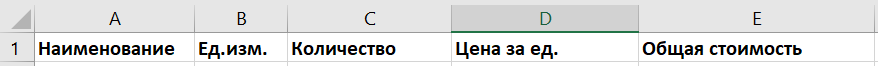
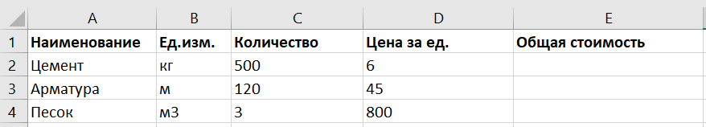

Основы работы

Андрей, привет! Сегодня мы с тобой познакомимся с самой основой Excel: что такое ячейки, строки, столбцы и как устроен интерфейс программы. Может показаться, что это банальные вещи, но на самом деле именно понимание этих базовых элементов отличает уверенного пользователя от новичка. Мы научимся перемещаться по таблице, добавлять и удалять строки и столбцы, переименовывать листы и настроим рабочее пространство под себя. А в практической части создадим таблицу «Строительные материалы» — такую, какую часто используют инженеры и прорабы в реальной работе. Этот урок — стартовая точка. После него ты будешь гораздо увереннее чувствовать себя в Excel. Поехали!
Интерфейс Excel
Начнем с того, как устроен Excel. Открыв программу, ты видишь:
- Главное меню (вкладки: «Файл», «Главная», «Вставка» и т.д.)
- Панель инструментов (здесь находятся кнопки, например, для форматирования текста)
- Строку формул — место, где отображается содержимое активной ячейки
- Рабочую область — таблица из ячеек
- Нижнюю панель — там переключаются листы
Можно настроить панель быстрого доступа — добавить туда, например, кнопки «Сохранить» и «Отменить», чтобы были под рукой.
Ячейки, строки, столбцы
Вся таблица Excel состоит из ячеек. Каждая ячейка — это пересечение строки и столбца. Например, ячейка A1 — это столбец A и строка 1.
Как работать с ячейками:
- Кликнуть — чтобы выбрать
- Двойной клик — чтобы редактировать
- Потянуть за угол — чтобы скопировать содержимое
Как работать со строками и столбцами:
- ПКМ по строке → вставить или удалить
- Потянуть границу между номерами — чтобы изменить высоту или ширину
- Двойной щелчок — автоподбор ширины/высоты

Чтобы выделить всю таблицу — нажми Ctrl + A. Чтобы перейти в начало — Ctrl + Home.
Работа с листами
Excel позволяет работать сразу с несколькими листами в одном файле:
- Добавление листа: нажми кнопку «+» внизу
- Переименование листа: сделай двойной щелчок по названию
- Перетаскивание листа: зажми лист и поменяй порядок
- Копирование листа: зажми Ctrl и перетащи

Названия листов лучше делать понятными: вместо «Лист1» — «Материалы» или «Смета».
Практическая часть
Давай создадим таблицу «Строительные материалы». Эта таблица пригодится тебе на практике при составлении смет или учете материалов.
Шаг 1. Открой новый Excel-файл.
Шаг 2. В ячейках A1:E1 введи заголовки:

Шаг 3. Введи 3 позиции:

Шаг 4. Выдели заголовки и сделай их жирными.
Шаг 5. Попробуй изменить ширину столбцов так, чтобы все было видно.
Шаг 6. Создай копию этого листа, назови ее «Черновик».
Чтобы создать копию — зажми Ctrl и перетащи лист вбок. Excel создаст новый лист с теми же данными.
Теперь давай закрепим материал урока в коротком тесте, а сразу после переходи к выполнению домашнего задания.